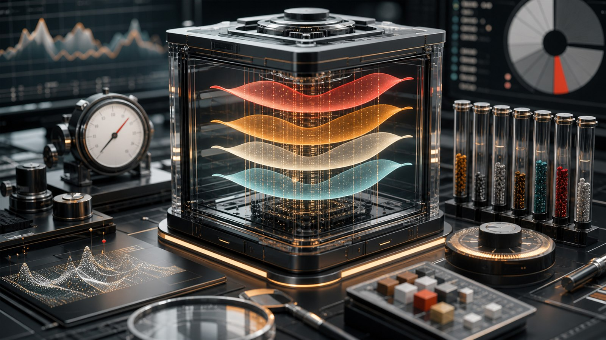
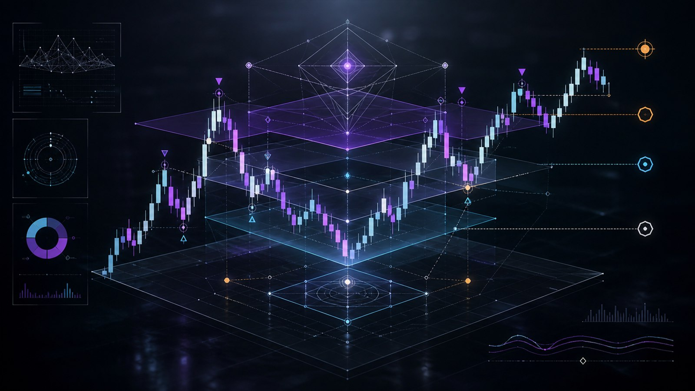

Evidence
每張圖都是一個 project 的入口，旁邊都有實際檔案和產物。
面試時可以直接從這裡切到專案頁，再依照 artifacts 路徑打開程式、報告、測試或 Obsidian note。


Review Path
面試現場最短導覽路線
- 每日 AB Pipeline看 agentic workflow、LLM handoff、shadow guardrail。
- Shioaji Execution看 broker API、live guard、repair confirmation。
- 短線雷達 ETL看官方資料、source verification、backfill automation。
- Z3B-Prime看規則量化、狀態機、full-universe backtest。